Фільм -презентація Коледж
Фаховий коледж геологорозвідувальних технологій
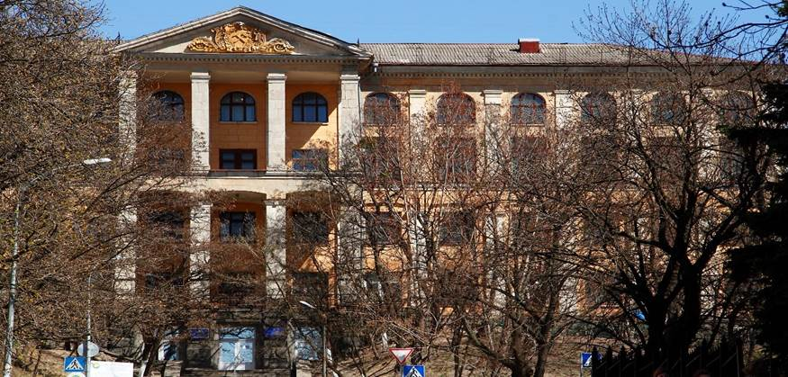
Відокремлений структурний підрозділ "Фаховий коледж геологорозвідувальних технологій Київського національного університету імені Тараса Шевченка" (КГРТ) створено на базі Київського геологорозвідувального технікуму (1930 рік заснування) та є структурним підрозділом Київського національного університету імені Тараса Шевченка з 2012 року..
Освітня місія - це сприяння гармонійному особистісному розвитку кожного студента, вдосконалення їх професійних компетентностей, формування прагнення і навичок, набуття нових знань.
Візія коледжу- Коледж в майбутньому: флагман геологічної фахової передвищої освіти країни, функціональний коледж, здатний генерувати сучасні геологічні знання та забезпечувати їх трансфер, що створює довгострокові цінності, формує, підтримує і розвиває ресурси надр України для наступних поколінь.
Коледж готує фахівців для геологічної та видобувної галузей промисловості. Вони отримують посади інженерно-технічного персоналу на більшості геологічних підприємств і установ України та за її межами.
Головним надбанням КГРТ є його випускники. За 95 років існування коледж підготував понад 50 тисяч фахівців для геологічної та інших галузей. Серед них багато першовідкривачів родовищ корисних копалин, талановитих геологів, геофізиків, буровиків -випускників нашого коледжу , і поза межами України, ставали відомими високопрофесійними науковцями, державними діячами, справжніми знавцями своєї справи. Вони і зараз працюють не тільки в Україні , а й на других континентах, відкриваючи поклади корисних копалин.
Гордістю коледжу є геологічний музей. В експозиційному залі площею 250 м2 розміщені 54 скляні вітрини і 50 подіумів зі зразками мінералів, руд, гірських порід і скам'янілостей. Основа кам'яного зібрання – мінерали, гірські породи і руди знайдені студентами й викладачами під час виробничих практик, а також подарунки від випускників коледжу.
Дозвілля студентів є одним з пріоритетних напрямків діяльності коледжу, оскільки воно займає помітне місце у комплексі виховної роботи зі студентською молоддю. Сьогодні актуальною є індивідуальна виховна робота як в навчальному процесі, так і в позааудиторний час.
Дозвілля студентів базується на функціонуванні ряду гуртків, спортивних секцій та клубів за інтересами. Багато культурних заходів стали традиційними й користуються великою популярністю серед студентської молоді коледжу. У коледжі працюють спортивні секції (футбол, волейбол, баскетбол, настільний теніс), в яких студенти проводять свій вільний час. Також збірні коледжу приймають участь у районних, міських змаганнях, де займають призові місця.
Великою популярністю серед студентів користуються концертні програми з нагоди Дня знань, Дня працівників освіти, Дня студента, Дня захисника Вітчизни, Міжнародного дня прав жінок та миру, Дня Перемоги, Дня матері.
В коледжі діє студентське самоврядування, яке надає вагому допомогу студентам та викладачам при проведенні заходів і розв’язанні питань з суспільного, культурного, навчального і спортивного життя.

Гуртожиток для студентів коледжу та університету
У коледжі є навчальні і спортивні корпуси, навчальні майстерні, їдальня, гуртожиток, навчальний полігон, геологічний музей, бібліотека з читальною залою, а також укомплектовані сучасною апаратурою і обладнанням кабінети й лабораторії. Комп’ютерний центр коледжу оснащений сучасними комп’ютерами, має доступ до Інтернет.
Коледж є колективним членом Спілки геологів України, Спілки буровиків України, Українського товариства охорони природи, Українського мінералогічного товариство та Міжнародної асоціації науково-технічного і ділового співробітництва з геофізичних досліджень і робіт у свердловинах.
Сьогодні Фаховий коледж геологорозвідувальних технологій Київського національного університету імені Тараса Шевченка - єдиний навчальний заклад України, який готує фахових молодших бакалаврів усіх геологорозвідувальних спеціальностей та є одним з провідних геологічних закладів освіти України.
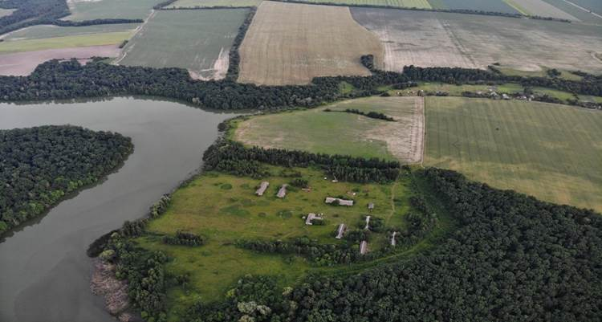
Геологорозвідувальний полігон для проведення практик студентів коледжу та університету
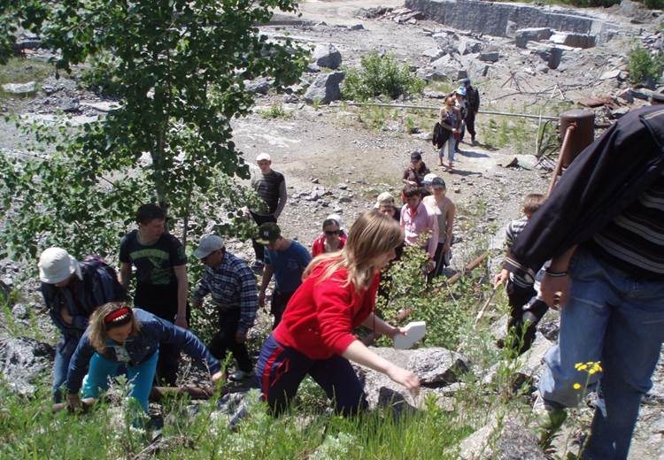
Геологічна практика
За освітньо-професійною програмою “Геологічні методи пошуків та розвідки родовищ корисних копалин” коледж готує фахових молодших бакалаврів, які займаються геологічним картуванням, пошуками та розвідкою родовищ корисних копалин. Випускникам присвоюється освітня кваліфікація фаховий молодший бакалавр з наук про Землю та професійна кваліфікація техніка-геолога.
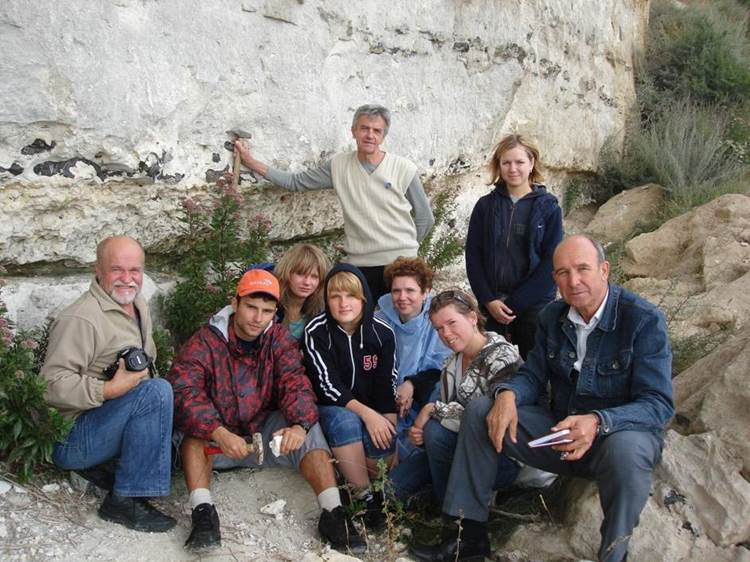
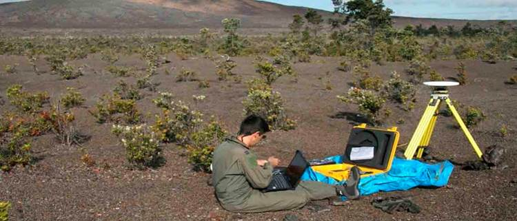
За освітньо-професійною програмою “Розвідувальна геофізика та комп’ютерна обробка геофізичної інформації” коледж готує фахових молодших бакалаврів, які займаються пошуками та розвідкою в земній корі нафти та газу, вугілля, рудних корисних копалин, будівельних матеріалів, підземних вод. Геофізична розвідка проводиться багатофункціональною електронною апаратурою та обладнанням, змонтованими на автомобілях, літаках і морських кораблях.
На всіх етапах геофізичних досліджень застосовуються комп’ютери. При комп’ютерній обробці геофізичної інформації використовуються сучасні універсальні комп’ютерні технології. Випускникам присвоюється освітня кваліфікація фаховий молодший бакалавр з наук про Землю та професійна кваліфікація техніка-геофізика.
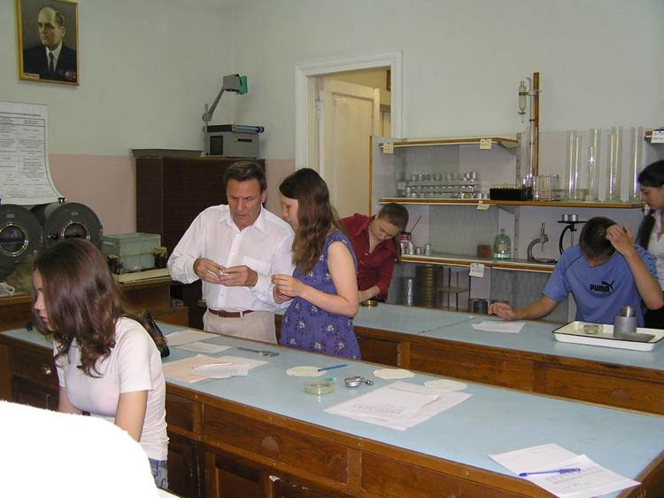
Практична робота у лабораторії інженерної геології
За освітньо-професійною програмою “Гідрогеологічні та інженерно – геологічні дослідження для водопостачання і будівництва” коледж готує фахових молодших бакалаврів, які займаються дослідженням та пошуком підземних вод, оцінкою ґрунтів для будівництва, інженерно-геологічними дослідженнями. Випускникам присвоюється освітня кваліфікація фаховий молодший бакалавр з наук про Землю та професійна кваліфікація техніка-гідрогеолога.
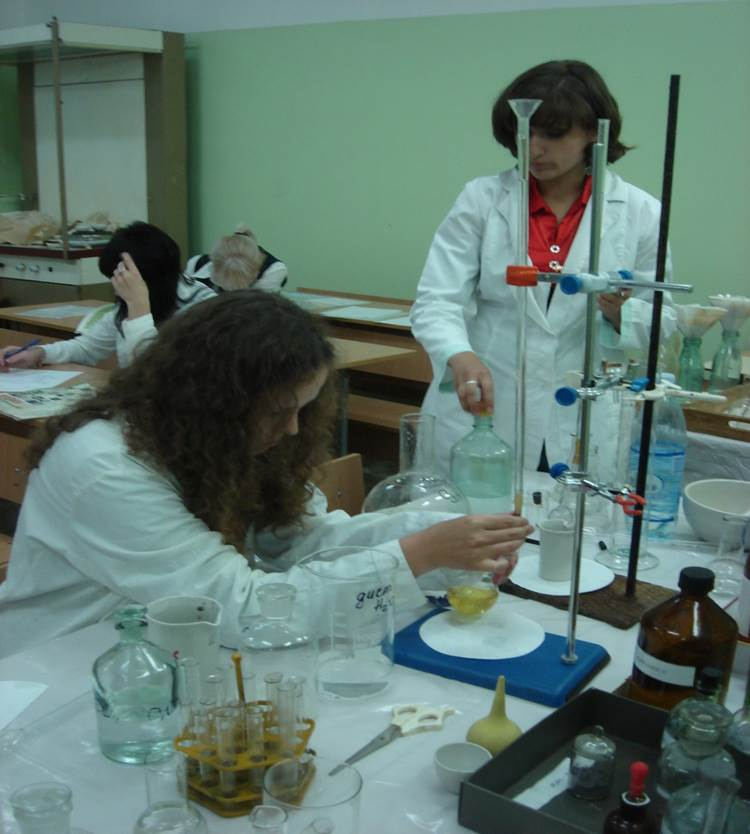
Група екологів під час екзамену у лабораторії методів вимірювання параметрів навколишнього середовища
За освітньо-професійною програмою “Прикладна екологія” коледж готує фахових молодших бакалаврів з контролю за станом навколишнього середовища і використанням природних ресурсів. Випускникам присвоюється освітня кваліфікація фаховий молодший бакалавр з екології та професійна кваліфікація техніка-еколога.
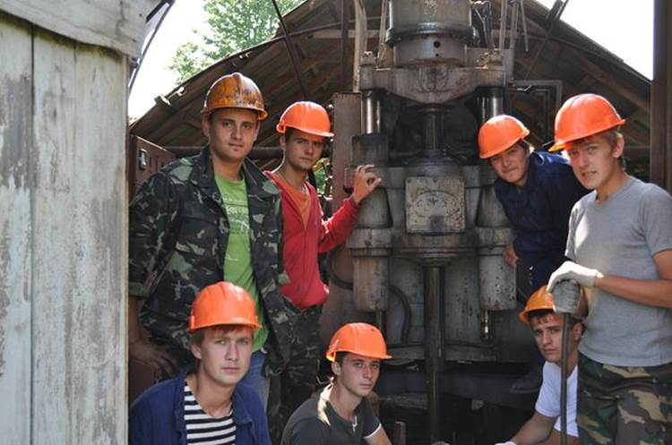
Практика з буріння на навчальному полігоні коледжу
За освітньо-професійною програмою “Буріння свердловин на тверді корисні копалини і воду” коледж готує фахових молодших бакалаврів з буріння свердловин на тверді корисні копалини і воду та для інженерно-геологічних досліджень на будівництві. Випускникам присвоюється освітня кваліфікація фаховий молодший бакалавр з гірництва та професійні кваліфікації робітник на буровому майданчику і бурильник.
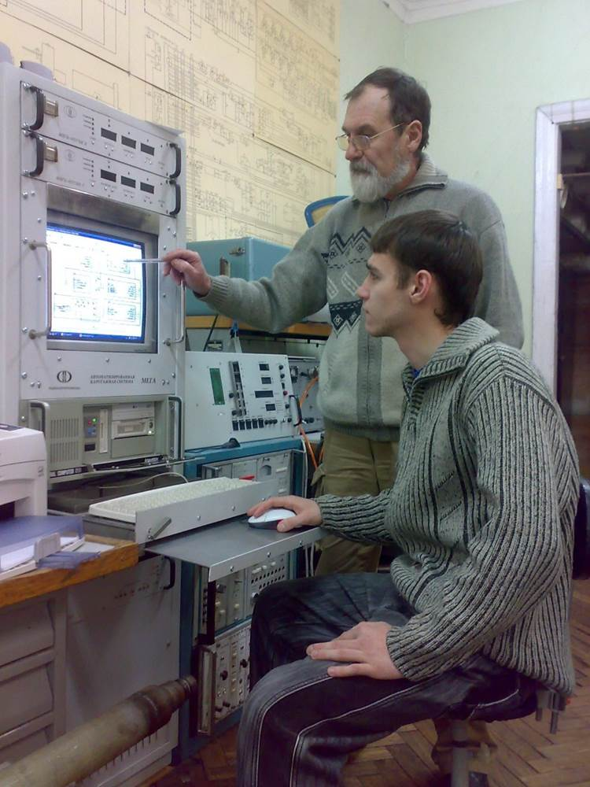
Студенти під час виконання лабораторної роботи
За освітньо-професійною програмою „Технічне обслуговування та ремонт геофізичної, радіоелектронної апаратури та комп’ютерної техніки” коледж готує фахових молодших бакалаврів з технічного обслуговування і ремонту електронної геофізичної апаратури, засобів радіоелектронної та комп’ютерної техніки. Додатково надаються професійні знання та навички з популярних спеціалізацій ремонту комп'ютерної техніки та адміністрування комп’ютерних мереж і операційних систем.
Студенти вчаться ремонтувати різні типи радіолектронного обладнання, та додатково придбають вміння професійного обслуговування комп'ютерних систем. Випускникам присвоюється освітня кваліфікація фаховий молодший бакалавр з машинобудування та професійна кваліфікація техніка-мехатроніка.
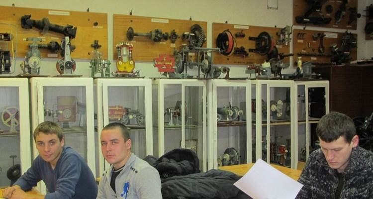
Студенти-автомобілісти на лекції по ремонту та обслуговуванню автомобілів
За освітньо-професійною програмою “Обслуговування та ремонт автомобілів і двигунів” коледж готує фахових молодших бакалаврів для виробничо-технічної та організаційної діяльності, пов’язаної з технічним обслуговуванням автомобілів і двигунів. Випускникам присвоюється освітня кваліфікація фахового молодшого бакалавра з автомобільного транспорту.
Історія коледжу
1930-1941
31 липня 1930 року засновано Київський геологорозвідувальний технікум (КГРТ) наказом Головного геологорозвідувального управління Вищої Ради народного господарства СРСР на базі топографічної професійної школи.
Технікум розпочав підготовку фахівців для геологічної галузі з чотирьох спеціальностей: геологорозвівальної, гідрогеологічної, бурової, а також топографічної.
КГРТ був розташований по вул. Жертв революції, 12 (нині Михайлівська), і займав один поверх будівлі. У цьому ж будинку знаходилися ще чотири навчальні заклади – два інститути і два технікуми. Заняття проводилися у дві зміни, починаючи з 16 години. У технікумі навчалося близько 150 учнів. На початку не було ніякої навчальної бази, за винятком невеликої бібліотеки. Не було й штатних викладачів. Відбувалося становлення навчального закладу: створювалися навчальні кабінети, поповнювалася літературою бібліотека, формувався педагогічний колектив.
У 1934 році відбувся перший випуск фахівців геологічної галузі. У цьому ж році будинок по вул. Жертв революції, 12, де був розташований технікум, передано Інституту Червоної професури, переведеному із Харкова до столиці УРСР. Колективом технікуму докладено багато зусиль для права на переїзд технікуму в нове приміщення Індустріального робфаку по вул. Червоноармійській, 23 (нині Велика Васильківська), де було зайнято 6 кімнат цокольного поверху. Це сприяло розпочати 1934-35 навчальний рік з шістьма навчальними групами першого курсу нового набору.
Через деякий час аудиторний фонд технікуму поповнився ще чотирма аудиторіями, що дало змогу проводити заняття у дві зміни з повним складом учнів.
Технікум було перейменовано в геолого-гідрогеодезичний, у результаті чого з’явилися нові спеціальності: маркшейдерська і авіафототопографічна. Кількість учнів була приблизно 500 осіб. Кількість штатних викладачів складала близько 20 осіб. Були створені фізичний, геодезичний, мінералогічний кабінети.
У дворі побудовано бурову вишку, що сприяло проведенню практик із ручного буріння. Бібліотека технікуму була розташована на бульварі Тараса Шевченка, 4, у приміщенні геологічного тресту.
З кожним роком справи Київського геологорозвідувального технікуму йшли вгору. Випуск молодих спеціалістів щорічно складав близько 100 осіб, а кількість учнів поповнювалася за рахунок нового набору (5-6 навчальних груп) з осіб, що закінчили семирічну школу. Вже в ті часи технікум набув велику популярність в Україні та інших союзних республіках. Кількість вступників на геологічні спеціальності з кожним роком зростала. Учні проходили практику на усій території Радянського Союзу, а після закінчення закладу працювали у різних куточках країни.
За період з 1934 до 1941 року технікум випустив понад 1000 фахівців.
1941- 1942
На початку Другої світової війни значна частина викладачів і учнів технікуму пішли на фронт. КГРТ було евакуйовано до м. Семипалатинськ (Казахстан), де продовжувалася підготовка фахівців для геологічної галузі країни, й донині функціонує геологорозвідувальний технікум, створений на базі Київського.
1943-1948
Після звільнення міста Києва в 1943 році почалася робота з відновлення Київського геологорозвідувального технікуму. Технікум відновив свою роботу у приміщенні школи №30 м. Києва по вул. Саксаганського, 64 на правах оренди приміщень з проведенням навчальних занять у третю зміну – з 20 години. На правах оренди використовувалися і приміщення середньої школи №136 по вул. Жилянській.
У 1945 році, після закінчення Другої світової війни, до технікуму повернулися учні, навчання яких перервала війна. Із збільшенням контингенту гостро стала проблема аудиторного фонду. Потреба в геологічних кадрах з розвитком народного господарства країни зростала. Урядом було прийнято рішення про будівництво студетського містечка Київського геологорозвідувального технікуму.
У 1947 році на Черепановій горі розпочато будівництво навчального корпусу та гуртожитку.
1949-1968
1 вересня 1949 року технікум розпочав заняття у власному навчальному корпусі по вул. Анрі Барбюса, 9 (нині Василя Тютюнника) у тій частині, будівництво якої на той час було завершено.


На початку 50-х років вводиться в дію ціле студентське містечко, яке включало навчальний корпус, гуртожиток, їдальню, навчальні майстерні зі столярним, токарно-фрезерувальним, слюсарним цехами, кузнею, а також гаражні бокси для автотранспорту та геологорозвідувальної техніки.
З 1950 до 1957 року у Київському геологорозвідувальному технікумі функціонували однорічні курси, на яких підготовлено близько 1500 техніків вузької спеціалізації.

У 1952 році була відкрита заочна форма навчання для молоді, яка прагнула здобути професію першопрохідника земних надр без відриву від виробництва.

З 1957 року розпочалася підготовка фахівців для країн, що стали на шлях самостійного розвитку, звільнившись від колоніалізму. На той час у Києві ми були першими серед професійно-технічних закладів, де почали навчатись іноземні студенти. Технікум підготував близько 500 фахівців для країн Азії, Африки і Латинської Америки.

У 1967 році було відкрито навчальний полігон у Житомирській області для проведення навчальних практик з топографії, бурової і гірничої справи, геофізичних, гідрогеологічних та інженерно-геологічних досліджень.

До вересня 1968 року збудовано ще один гуртожиток на 480 місць для приїжджих студентів.
1969-1989
У вересні 1970 року була введена в дію прибудова до навчального корпусу на 8 навчальних аудиторій. На першому поверсі прибудови розмістився студентський буфет-кафетерій.
1977 рік знаменний тим, що було завершено будівництво нового навчального корпусу і спортивного комплексу. Новий і старий навчальні корпуси було з’єднано переходами, і загальна площа навчальних приміщень склала понад 14800 кв.м.
З цього часу заняття проводяться в одну зміну, що сприяє поліпшенню позаурочної і виховної роботи: художньої самодіяльності, технічної творчості, різноманітної роботі у гуртках. Запроваджений у дію спортивний комплекс дає змогу удосконалити роботу спортивних секцій з фізичної підготовки, яка потрібна геологам польових експедицій і партій.
У приміщенні лабораторії геофізичних методів дослідження свердловин було збудовано унікальну дослідну свердловину. Її глибина й обладнання дозволяє проводити практичні та лабораторні заняття в аудиторних умовах, але максимально наближених до виробничих, еталонувати каротажну апаратуру.

1 вересня 1986 року відкрито геологічний музей технікуму. Фонди музею нараховують понад три тисячі зразків мінералів і гірських порід із родовищ різних регіонів України та світу і більше 300 одиниць палеонтологічної колекції. В музеї проводяться навчальні заняття з мінералогії, петрографії, корисних копалин, загальної та історичної геології., а також екскурсії для студентів, школярів.

З 1987 року в технікумі діє спеціальне відділення перепідготовки кадрів середньої кваліфікації з відривом від виробництва для навчання експлуатації, обслуговуванню і ремонту складної геофізичної апаратури. Також проходять стажування викладачі технікумів геологічного профілю з Лаосу, МНР, В’єтнаму.
Успішно реалізуються договори про співдружність з В’єтнамським політехнікумом, північним та південним геологорозвідувальним технікумами з ДРВ, геологічною школою Заводовою м. Вроцлава (Польща).

Викладачі технікуму у різні роки надавали допомогу у пошуках і розвідці родовищ корисних копалин і підготовці фахівців геологічного профілю у Алжирі, В’єтнамі, Китаї, Лаосі, Ірані, Нігерії, Ефіопії та інших країнах. Протягом багатьох років у технікумі проходили стажування викладачі технікумів геологічного профілю з країн, що розвивалися.

Київський геологорозвідувальний технікум був підпорядкований Міністерству геології Радянського Союзу, згодом передпорядкований Міністерству геології України.
Будівля навчального корпусу коледжу є одним із еталонів повоєнної архітектури. А сходи, що ведуть до нього, досі користуються популярністю серед кінематографістів. Кадр з фільму "Королева бензоколонки". Зйомка велась на сходах геологорозвідувального коледжу.

.
За часи незалежності України
1990-2000
За час незалежності України технікум стає базовим серед галузевих навчальних закладів 1-2-го рівнів акредитації та одним з кращих серед коледжів та технікумів України з підготовки молодших спеціалістів для геологічної галузі і всього виробничо-господарського комплексу України.
Зростає матеріальна-технічна база технікуму, зміцнюється науково-методичний потенціал, зусилля педагогічного колективу спрямовуються на виконання головного завдання – підготовку висококваліфікованого, компетентного, конкурентоспроможного спеціаліста, готового до активної, творчої, професійної діяльності.

Багато випускників пам’ятають тих, хто був на початку існування коледжу як покоління високо інтелігентних, досвідчених викладачів, які віддавали знання та душу своїй справі.
У технікумі відбувся процес “зміни поколінь”. На зміну заслуженим викладачам поступово приходить молодь, переймаючи традиції та досвід своїх попередників.
Багато з того покоління «шестидесятників, сімдесятників, вісімдесятників» та початку 90-х років - це заслужені люди, “золотий фонд” нашого коледжу, керівники підрозділів і викладачі, досягнення і нагороди яких важко перелічити.
Славна когорта наставників у різні роки та в першу чергу це - директори технікуму:
- 30-40 роки - Горбач С.І., Мельников, Купрський, Лінійчук Я.У., Радченко С.П., Боревський Л.Д., Радіонов С.П., Ейдельмант М.В., Консевич А.І.;
- 40-50 роки -Холодкевич В.К., Ларін К.Л., Відоменко К.Р., Костюченко І.В.;
- 60-70 роки - Щеглов А.С., Егоров В.С.;
- 70- 90 роки - Найчук В.К.
За часи незалежності України:
-1990-1998 роки - Коваленко А.В.;
- 1998-2011 роки – Лузан В.В., (1999 - Лисиченко Г.В.), Лузан В.В.;
-2011-2013 роки- (2011-Захожай В.Б.); Мартиненко В.В.;
-2013-2018 роки - Безродний Д.А.; Заверталюк Т. Ю.;
- 2018 -2023 роки - Яценко В.В.;
- з 2023 року - Тонконоженко Л.Ю.
заступники директора:
- з виробничого навчання- Трященко Л.Ф. – 70-80 роки, Коваленко А.В., Загибайло Г.Т., Коваленко О.В.-1980-2015;
- по роботі з іноземними студентами -Столяров В.А., Бойко В.Я.- 1987-1994;
- з адміністративно - господарської роботи - Дубовий В.В., Карасьов Г.І., Бохан В.Г., Ботвін В.В., Буговська С.Ф.- 1980-2010; Коваль Л.В. з 2020 року;
- з навчальної роботи - Бакало В.О., Макшанов Г.М., Данько Є.Т., Банько М.В., Лебедь І.К. -1970-1995; - Мартиненка В.В. - 1995-2012; Заверталюк Т.Ю. - 2012-2015; Найчук Л.І. - 2015 -2024; Войновська Т.М. з 2024 року;
- з виховної роботи - Петелько О.Ф., Кулик Н.А., Ширін В.О., Гайовий І.О., Дубчак Є.С., Тузова Н.І.- 1980-2000; Соколовська А.Б. - 2000-2015; Войновська Т.М. - 2015- 2023.
-завідувачі відділеннями: Полоза І.І., Євдокимов О.М., Данєвич Г.М., Бакаєв М.Д., Карабович В.Є., Урванов Г.В., Загнетко В.Ю., Овчинніков Л.І., Михайлов Н.Ф., Довгопол, Лузан В.В., Коваленко О.В., Мартиненко В.В., Буговська С.В., Найчук Н.В.; Бохан В.Г., Носенко В.Г., Висоцька Л.Я.; Дубчак Є.С., Сутулова Л.В., керівники фізвиховання - Боков М.І., Кашталян М.А., Юрченко А.С. та робота з іноземними студентами з 1957-1999 роки: Навроцький О.Г., Крамаренко Л.Г., Столяров В.А., Бойко В.Я., Слободян С.І., Петелько О.Ф.
викладачі технікуму: Кулик М.М. –50-ті роки, Левітес Я.М. –50-70-х роки, Глібко В.М. –50-80-х роки, Таращанський В.А. – 50-80-х роки, Хабленко Н.І. 50-80-х роки, Гамшеєв С.М. –60-80-х роки, Брацлавський Й.О. –60-80-х роки, Козира Г.Я. –60-90-х роки, Ширін В.О. –70-2000-х років, Горячка І.В. –50-70-х років, Нагля В.В. –50-70-х роки, Овчаренка В.М. – 50-70-х роки, Старинський М.В. –50-90-х роки, Рябчун В.К. –70-90-х роки, Кіпніс А.Ю. –60-80-х роки, Заворотько Ю.М. – 60-2020-х роки, Аксьом Д.М. –60-2000-х роки, Рублевська Л.В. –70-2000-х роки. Король Г.П. –70-2000-х роки. Башлик С.М. –70-2010-х роки, Камзіста Ж.С. – 70-2010-х роки, Фролов О.Ф. – один з найперших випускників технікуму (1937 року), викладач 60-90-х років, Іванова Н.О. та Орєхова С.М. – викладачі 70-2020-х років, Чепурной В.С. - 70-90-х роки, Кошелєв І.М. –70-90-х роки, Мелащенко В.Д. –70-2000-х роки, Ільченка Є.Ф. –70-2000-х роки, Зайцев 0.0. –80-2020-х роки, Бублій М.І. –80-2020-х роки, Баран В.В. –60-2020 роки і багато-багато інших, чия праця втілилася нині втілюється у подальшу діяльність своїх учнів на благо всього людського суспільства.
Технікум відкрив багатьом вихованцям шлях у науку, на найвищі щаблі державного і господарського управління. Серед випускників технікуму – народні депутати України, керівники галузей, великих підприємств, наукових установ, закладів вищої освіти.
З 1991 року у технікумі багато уваги приділяється національному відродженню та розширенню освітньої діяльності а саме:
-відкриття нових спеціальностей як «Обробка геофізичної інформації на ЕОМ», «Діловодство», «Економіка і планування геологорозвідувальних робіт», «Бухгалтерський облік і аудит», «Обслуговування та ремонт автомобілів та двигунів», «Технічне обслуговування і ремонт електронно-обчислювальної техніки в геофізичній апаратурі», «Охорона навколишнього середовища при геологорозвідувальних роботах і раціональне використання природних ресурсів»;
- відкриття підготовки іноземних громадян до вступу у навчальні заклади на контрактній основі серед професійно-технічних закладів одного із перших в Україні.
Розширюється співпраця з організаціями геологічної галузі як в Україні, так і в інших країнах. Ефективна співпраця з Південно-Аральським гідрогеологічним трестом ВО «Туркменгеологія». Викладачі та студенти технікуму провели геолого-гідрогеологічну зйомку геофізичними методами для виявлення прісноводних лінз у Північному Каракумі (1990-1993).

У 1992 році відкрито філіал технікуму в місті Ташауз Туркменістану. Організовано набір на денне навчання за спеціальностями: «Геологія, пошуки та розвідка родовищ корисних копалин»; «Гідрогеологія та інженерна геологія»; «Технологія та техніка розвідки родовищ корисних копалин». Викладачами технікуму надано навчально- методичну допомогу в організації навчального процесу.
У 1994 році стартує перепідготовка кадрів із числа молодших спеціалістів відповідно до наказу Міністерства освіти і науки України «Про організацію спеціального відділення перепідготовки кадрів в Київському геологорозвідувальному технікумі».
Продовжується традиція фахової методичної роботи. Викладачі коледжу – автори більше 60 підручників і навчальних посібників, виданих у різний час; серед них Анохіна І.Д., Башлик С.М., Брацлавський Й.А., Бревда Н.Й., Горячко І.В., Заворотько Ю.М., Загибайло Г.Т., Заєць О.П., Камзіст Ж.С., Коваленко А.В., Коротких І.В., Кошелєв І.М. Левітес Я.М., Лузан В.В., Люкшин В.С., Нагля В.В., Овчинніков Л.І., Петелько О.Ф., Рублевська Л.В., Сапфіров Г.М., Фролов О.Ф., Гонтарев Ю.Ф. та інші.
У 1999 році було сформовано модерний навчальний комп’ютерний центр.

На сьогодні комп’ютерний центр оновлений актуальною комп'ютерною технікою, програмним забезпеченням та сучасними мультимедійними системами і устаткуваннями, комп'ютерними сітками. Програмне забезпечення лабораторій комп'ютерного центру дає можливість студентам оволодіти сучасними комп'ютеризованими технологіями обробки геолого-геофізичної, екологічної, гідрогеологічної інформації.


2001-2012
З 2001 року технікум підпорядковано Міністерству освіти і науки, молоді та спорту України. Технікум є базовим вищим навчальним закладом 1-2 рівнів акредитації з підготовки Державних стандартів освіти напряму «Геологія». Адміністрація та викладачі технікуму беруть активну участь у діяльності Ради директорів та міських методичних об’єднань вищих навчальних закладів 1-2-го рівнів акредитації.
У 2005 році колектив технікуму за вагомі досягнення у вихованні молодого покоління, підготовці кадрів для геологічної галузі нагороджено Почесною грамотою Кабінету Міністрів України.
У 2010 році за заслуги у підготовці фахівців для розвідки надр України Державна геологічна служба та Центральний комітет профспілки працівників геології, геодезії та картографії нагородили технікум відомчою відзнакою «Медаль В.І. Лучицького».
З 2012 до сьогодення
З жовтня 2012 року технікум приєднано до Київського національного університету імені Тараса Шевченка і реорганізовано в Коледж геологорозвідувальних технологій.
У 2019 році коледж набуває статусу закладу фахової передвищої освіти.
Наказом Міністерства освіти і науки України від 19 серпня 2020 року № 1072 коледж перейменовано у Відокремлений структурний підрозділ «Фаховий коледж геологорозвідувальних технологій Київського національного університету імені Тараса Шевченка».
За більш як 95 років історії змінювалась не тільки назва закладу а змінювались назви спеціальностей. Змінювались покоління і цінності. Приходили нові студенти і нові працівники - обранці геологічної професії, які засвоювали всі теоретичні знання і практичні уміння, та виходили на простори Батьківщини в пошуках родовищ корисних копалин.
Оскільки геологія - це комплексна наука, яка потребує глибоких всебічних знань, коледж випускає техніків-геофізиків, техніків-гідрогеологів, техніків-екологів, техніків з буріння, техніків з експлуатації та ремонту устаткування, механіків та слюсарів з ремонту автомобілів, фахових молодших бакалаврів з геологічного туризму.
Адже пошук і розвідка родовищ корисних копалин неможлива на сучасному рівні без знань геофізики та комп’ютерної обробки даних. Так само, як і знання гідрогеології та екології конче необхідні при розвідці та видобуванні корисних копалин.
Тобто, всі професії, які надає наш коледж, пов’язані з геологічною галуззю народного господарства.
Окрім того, потрібен глибокий аналіз забезпечення раціонального та комплексного використання мінерально-сировинних ресурсів, потрібні нові погляди та вивчення світових аналогій по використанню екологічно чистих технологій видобутку мінеральної сировини та захисту довкілля від техногенного забруднення.
Тому, можливі і відкриття нових професій в коледжі чи удосконалення існуючих.
Незмінною є сутність – підготовка фахівців, конкурентоспроможних у будь-яких економічних умовах. Матеріально-технічна база постійно оновлюється відповідно до вимог сьогодення.
Сьогодні коледж – один з провідних навчальних закладів, який готує фахових молодших бакалаврів геологічної галузі. За матеріально-технічним, кадровим і методичним забезпеченням навчально-виховного процесу навчальний заклад відповідає вимогам сьогодення.
Зростає матеріальна база коледжу, зміцнюється науково-методичний потенціал. Зусилля педагогічного колективу спрямовуються на виконання головного завдання – підготовку висококваліфікованого, компетентного, конкурентоспроможного спеціаліста, готового до активної, творчої, професійної діяльності.
Коледж є колективним членом Спілки геологів України, Спілки буровиків України, Українського товариства охорони природи, Українського мінералогічного товариства та Міжнародної асоціації науково-технічного і ділового співробітництва з геофізичних досліджень і робіт у свердловинах.
Символіка
Герб Київського національного університету
імені Тараса Шевченка

Герб Київського національного університету імені Тараса Шевченка розроблено у 1994 році на ознаменування 160-річчя заснування університету. Графічні роботи виконав художник Сергій Бєляєв.
У центрі гербової композиції зображено головний корпус університету – Червоний корпус – символ фундаментальної університетської освіти. Ліворуч змальовано архангела Михаїла – небесного покровителя Київської землі, а праворуч зображено Святого Рівноапостольного Великого князя Володимира – покровителя знань і невпинного наукового пошуку, чиє ім’я до 1919 р. носив університет.
Рік заснування університету – 1834 – центральна ідея композиції. Золоті стрічки з написом “Utilitas, Honor et Gloria” (букв. “Користь, честь і слава”), який був девізом ордена Святого Володимира, визначають пріоритети історичного розвитку Шевченкового університету.
Увінчує композицію герба нешироке червоне кільце із написом “Київський національний університет імені Тараса Шевченка”.
Герб Відокремленого структурного підрозділу
«Фаховий коледж геологорозвідувальних технологій
Київського національного університету імені Тараса Шевченка»
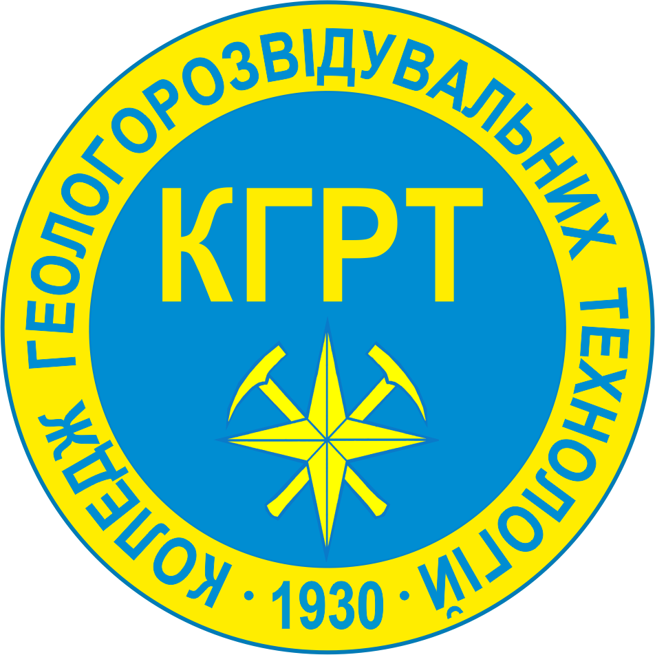
Герб Відокремленого структурного підрозділу «Фаховий коледж геологорозвідувальних технологій Київського національного університету імені Тараса Шевченка» розроблено у 2010 році на ознаменування 80-річчя заснування коледжу .
У центрі гербової композиції зображено окружність, яка забарвлена в блакитний колір, оскільки океан становить більшу частину всієї території планети ЗЕМЛЯ.
В окружність вписані стрілки компасу, які зорієнтовані в широтному і меридіальному напрямках та два схрещених геологічних молотки. "Mete und Malleo!" - розумом і молотком.
Центральна ідея композиції – історична абревіатура КГРТ, рік заснування – 1930.
Увінчує композицію герба нешироке жовте кільце, яке символізує третю від сонця планету Сонячної системи.
Кредо:
"Шлях до відкриття родовищ проходить через глибокі знання, думку та серце геолога."